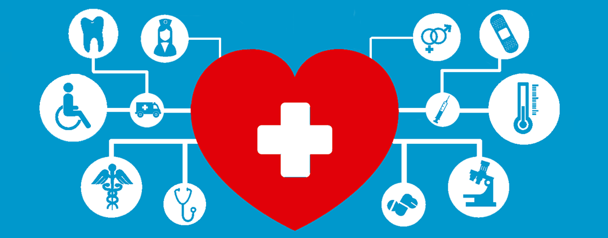

Our Commitment: Exceptional Health Services

Eloheh Health offers a suite of services designed to make healthcare simpler, faster, and more compassionate. Our goal is to deliver care with dignity and innovation.
Services We Provide
- Telemedicine Consultations: Get medical advice from licensed doctors without leaving your home.
- Wellness Coaching: Personalized health plans and lifestyle guidance from our trained wellness team.
- Remote Monitoring: Continuous care through devices that alert caregivers and providers in real-time.
Benefits of Choosing Eloheh Services
- 24/7 availability across all digital platforms.
- Backed by over 10 years of clinical experience.
- Customized services for seniors, rural communities, and chronic illness patients.
Find out more about the health service trends at Hospitals & Health Networks.
Download our full service guide here: Eloheh Services PDF
Contact Me — Services Page by Nayan